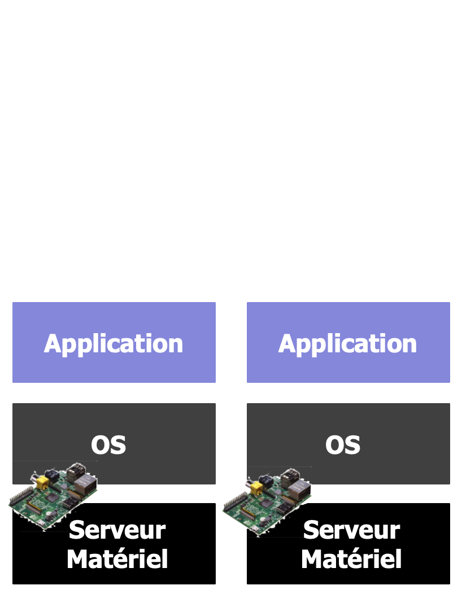
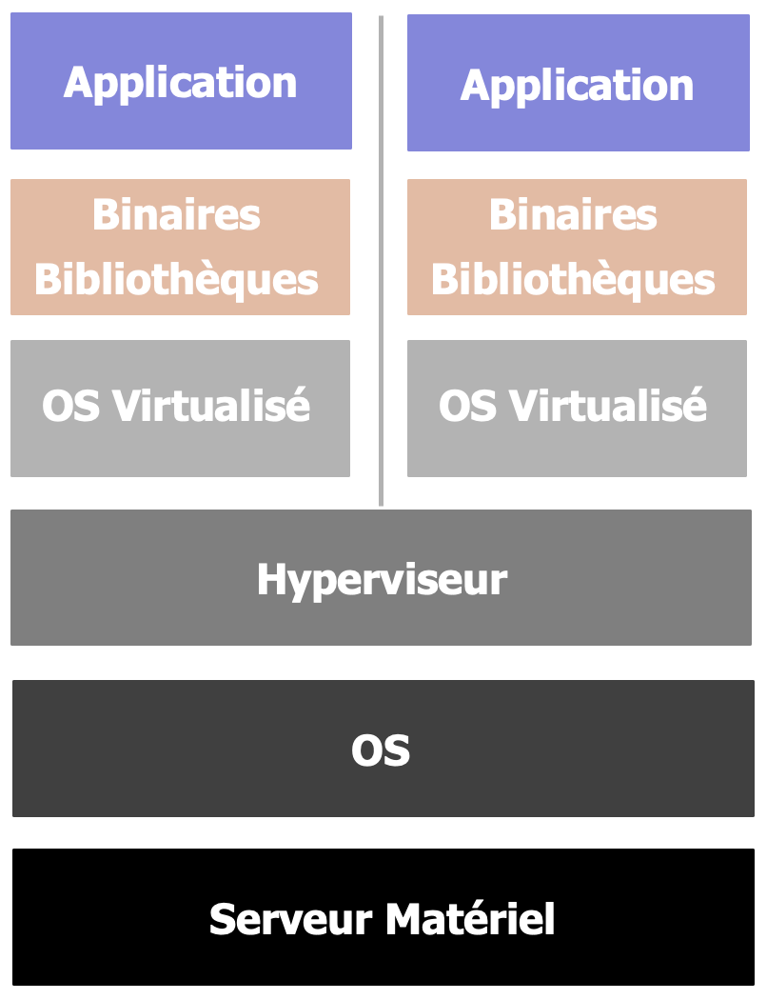
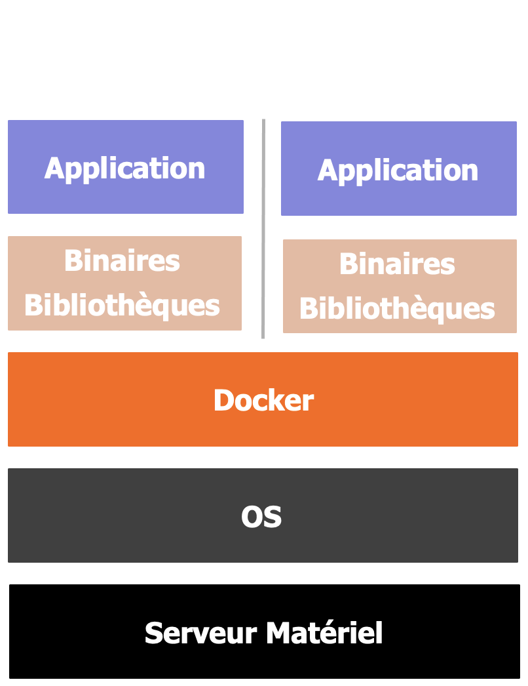
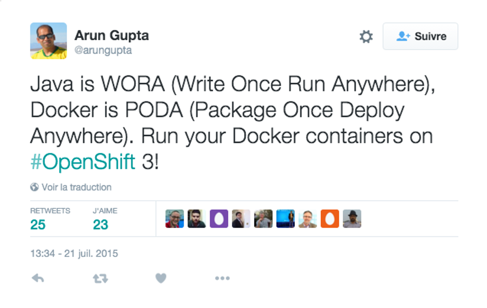

Adopter une baleine bleue
Découverte de Docker
Mickaël BARON - Version 02-2022
 @mickaelbaron
@mickaelbaron mickael-baron.fr
mickael-baron.frLicence d'utilisation
Creative Commons
Contrat Paternité
Partage des Conditions Initiales à l'Identique
2.0 France

Qui suis-je ?

 mickaelbaron
mickaelbaronIngénieur de Recherche ☀️
- Recherche dans l'équipe Ingénierie des Données et des moDèles (IDD)
- Valorisation des plateformes logicielles
- « Coach technique » auprès des usagés


Ancien Responsable 🌑 (2011-2021)

- Rubriques : Java, Java Web, Android, Eclipse, Spring et Netbeans
- Rédacteurs de tutoriels
- Chiffres
- 4 M de visiteurs
- 12 M pages vues/mois
- 7500 membres
- 2000 forums
Disclaimer 🧎🏻♂️
Dans la même série ... avec Docker
Objectif du support de cours
- Pourquoi ?
- Généralités
- Image
- Conteneur
- Construction d'une image
- Gestion des données
- Redirection des ports
Contexte : besoin d'isoler ...
Exécuter une application sur un OS non supporté
- Ex : ROS qui ne fonctionne que sous Ubuntu 16.04
Multiplier les instances d’une même application
- Ex : monter en charge une application web
Exécuter une application en mode « bac à sable »
- Ex : tester un prototype de recherche
Reproduire son environnement de production
- Ex : PHP, MySQL, compilateur, Latex
Comment isoler ?
Pour isoler une application => trois techniques
Physique
Virtualisation
Conteneur
Virtualisation VS Conteneur
Comparatif sur les performances (valeurs approx.)
| Virtualisation | Conteneur | |
|---|---|---|
| Démarrage | 2 min. | 0.2 sec |
| Mémoire | 256 Mo min. | 0.3 Mo |
| Espace Disque | 1 Go min. | 0.1 Mo |
Généralités Commerciales
Docker Inc. est une entreprise fondée en mars 2013
Sites web officiels
- Site référence : www.docker.com
- Documentation : docs.docker.com
- Installation : docs.docker.com/engine/install
- Twitter : twitter.com/Docker
- Blog : www.docker.com/blog
Propose des outils du même nom que la société
Généralités Techniques
Basé sur le principe des conteneurs
- LinuX Containers (LXC) : isolation exécution
- cgroups : isolation au niv. noyau Linux
- Union Mounting : point de montage
Outils principalement en ligne de commande (CLI)
Fonctionne nativement sous Linux
Sous Windows et macOS nécessite une machine virtuelle Linux (DockerDesktop)
Docker : un // avec Java ❤️
Images
Dans un système Linux, deux systèmes de fichiers
- boots : contient boot loader et noyau (kernel)
- roots : contient structure des répertoires

Images
Plusieurs rootfs ?
- Sous un système Linux classique un seul rootfs
- Sous Docker possibilité de plusieurs rootfs
Images
Le rootfs constitue l’image de base d’un conteneur
Une image ne peut être modifiée car en lecture seule
Images
Une image est composée de couches appelées layer
Une couche est liée à la couche inférieure dite parente
Toutes les couches forme l'image finale
- Image finale = Deb emacs Apache
- Image de base = Debian
- Deuxième couche = Emacs
- Couche parente Apache = Emacs
Images
Une image finale peut être réutilisée pour construire de nouvelles images
Où trouver des images ?
- Registre public d'images : hub.docker.com
- Possibilité de créer son registre privé d'images
Conteneur
Un conteneur est une couche modifiable liée à la couche inférieure
Seul le conteneur est en lecture et écriture
Comparaison avec le monde Java
- bootfs = JVM
- Image de base = classe Object
- Image = classe
- Relation parent = héritage
- Conteneur = instance d'une classe
Conteneur interactif (démo1)
Commandes : pull, run et ps
# Télécharge l′image busybox depuis DockerHub
$ docker pull busybox
Using default tag: latest
latest: Pulling from library/busybox
c00ef186408b: Pull complete
ac6a7980c6c2: Pull complete
Digest: sha256:e4f93f6ed15a0cdd342f5aae387886fba0ab98af0a102da6276eaf24d6e6ade0
Status: Downloaded newer image for busybox:latest
# Création d′un conteneur
$ docker run -it busybox /bin/sh # -i = interactif –t = dans la console en cours
# Liste le contenu du rootfs du conteneur
$ 🐳 ls
bin dev etc home proc root sys tmp usr var
# Liste les processus du conteneur
$ 🐳 ps -ef
# Fermeture du conteneur (le conteneur se termine)
$ 🐳 exit
# Affichage des conteneurs (en cours, arrêtés, stoppés...)
$ docker ps –a
CONTAINER ID IMAGE COMMAND CREATED STATUS PORTS NAMES
d2bc3ccd2ee1 busybox "/bin/sh" 26 minutes ago Exited (0) 23 minutes ago goofy_bhabhaConteneur interactif (démo1)
Commandes : pull, run et ps
Conteneur détaché (démo2)
Commandes Docker : run, logs, ps, attach
# Démarre un processus très long
$ JOB=$(docker run -d busybox /bin/sh -c 'while true; do echo Hello LIAS $(date); sleep 1; done')
# Affichage des informations
$ docker logs $JOB
...
Hello LIAS Thu Jan 7 15:09:01 UTC 2016
Hello LIAS Thu Jan 7 15:09:02 UTC 2016
# Vérification de l′état d′exécution
$ docker ps
CONTAINER ID IMAGE COMMAND CREATED STATUS PORTS NAMES
01d4dacd55e2 busybox "/bin/sh -c 'while" 1 minutes ago Up 25 seconds reverent_franklin
# Attacher un conteneur
$ docker attach $JOB
...
Hello LIAS Thu Jan 7 15:17:22 UTC 2016
Hello LIAS Thu Jan 7 15:17:23 UTC 2016 # Pour terminer un CTRL-C
# Vérification de l′état d′exécution
$ docker ps -a
CONTAINER ID IMAGE COMMAND CREATED STATUS PORTS NAMES
01d4dacd55e2 busybox "/bin/sh -c 'while" 9 minutes ago Exited (0) 44 s reverent_franklin
# Suppression d′un conteneur
$ docker rm $JOB # Un conteneur doit être arrêté pour le supprimer ou forcer par l’option -fConteneur détaché (démo2)
Commandes : run, logs, ps, attach
Conteneur sans état (démo3)
Commandes : run, exec, diff, rm
# Création de fichiers dans le répertoire /tmp
$ JOB=$(docker run -d busybox /bin/sh -c 'while true ; do /bin/touch /tmp/$(date +%H%M%S); sleep 3; done')
# Liste le contenu du répertoire /tmp
$ docker exec $JOB /bin/ls /tmp
072208
072211
# Changement sur le système de fichier – C = Changement, A = Ajout, D = Delete
$ docker diff $JOB
C /tmp
A /tmp/072208
A /tmp/072211
# Suppression du conteneur
$ docker rm -f $JOB
01dbf7a101abc13a80a95fae41c78a3997de90fa9636c26a4c6498738c631c26
# Si nouveau conteneur les anciens fichiers ne sont plus là
$ docker run -it busybox /bin/ls /tmp
# N′avez-vous jamais voulu faire cela ? ‘rm –rf /usr’
$ docker run -it busybox /bin/sh -c '/bin/rm -rf /usr;/bin/ls /'Conteneur sans état (démo3)
Commandes : run, exec, diff, rm
Créer une image
À la création d’un conteneur, le système de fichiers correspond à celui de l’image parente
Lors de l’arrêt du conteneur les modifications sont perdues
J'aimerais pouvoir conserver ce qui suit ?
- Installations de programmes
- Organisation de répertoires
- Configuration (réseaux, programmes...)
Solution ➡️ créer une nouvelle image
Créer une image
Pour créer une nouvelle image Docker dans votre dépôt local
- commande commit
- utilisation d'un fichier Dockerfile
Commande commit
- Passage d'un conteneur en image
- Conteneur à l'arrêt ou en exécution
Fichier Dockerfile (détaillé par le suite)
Créer une image (cas d'étude réel)
Cas d'étude : rdf3x
- Moteur de stockage de données RDF
- Interpréteur SPARQL (en ligne de commande
Limitations de la version actuelle rdf3x
- Ne compile (C++) que sous Linux (Ubuntu 16.04)
- Pas de SPARQL Endpoint (interface web)
Objectifs ➡️ configurer son poste de développeur
- Proposer une image Docker de rdf3x
- Importer des données et exécuter des requêtes
Créer image via commit (démo4)
Commandes : run, exec, diff, rm
# Créer un conteneur à partir d’une image de base
$ docker run –it --name gh_rdf3x ubuntu:16.04 /bin/sh
# Exécuter les commandes
$ 🐳 apt-get update -y && apt-get install -y git g++ make
...
$ 🐳 git clone https://github.com/gh-rdf3x/gh-rdf3x && cd gh-rdf3x && make
...
# S‘assurer que la compilation s‘est bien déroulée
$ 🐳 ls /gh-rdf3x/bin
buildmonetdb buildpostgresql cts infra makeutil rdf3xdump rdf3xembedded rdf3xload rdf3xquery
rdf3xreorg rdf3xupdate rts tools translatesparql
# Création d’une image appelée mickaelbaron/gh_rdf3x_manual
$ docker commit gh_rdf3x mickaelbaron/gh_rdf3x_manual
C40410395aedf8cfb8f55469a974a519ee764dd3a765e3c78df8df60316870ad # => Id de l’image
# Suppression du conteneur actuel
$ docker rm -f gh_rdf3x
gh_rdf3x
# Affiche la liste des images en cache
docker images
REPOSITORY TAG IMAGE ID CREATED VIRTUAL SIZE
mickaelbaron/gh_rdf3x_manual latest c40410395aed About a minute ago 533 MB
Ubuntu latest ac6a7980c6c2 5 weeks ago 123 MB
# Création d’un conteneur à partir de la nouvelle image
$ docker run –it --name gh_rdf3x mickaelbaron/gh_rdf3x_manual /bin/shCréer image via commit (démo4)
Commandes : run, exec, diff, rm
Créer image via Dockerfile
Un fichier Dockerfile pour créer des images
- Provisionner (installer des apps, copier des fichiers)
- Configuration (port, tâche de fond)
Format du fichier
- # pour les commentaires
- INSTRUCTION arguments
Chaque instruction est exécutée indépendament et suivie par un commit ➡️ image à chaque instruction
Créer image via Dockerfile (démo5)
Préparation à la construction d’une image RDF-3X
# Indique l′image de base
FROM ubuntu:16.04
LABEL maintener="Mickael BARON"
# Exécute des commandes dans une couche
RUN apt-get update -y && \
apt-get install -y git g++ make
# Exécute de nouvelles commandes dans une autre couche
RUN git clone https://github.com/gh-rdf3x/gh-rdf3x && \
cd gh-rdf3x && \
make
# Précise le répertoire courant à la création du conteneur
WORKDIR /outputCréer image via Dockerfile (démo5)
Persister les données avec les volumes
Un conteneur est volatile : les données produites sont perdues lors de la destruction du conteneur
Comment s’assurer que si je recrée mon conteneur je retrouverai mes données ? ➡️ utilisation des Volumes
Dossier qui se trouve à la fois sur le hôte et sur le conteneur (comme un dossier partagé)
Pour créer un volume, utilisation du paramètre -v lors de la création d’un conteneur
Les volumes (démo6)
Commande : run
$ ls $(pwd)/data
lubm-data.nt query.sparql
# Création d′une base RDF-3X via un conteneur Docker
# Volume où seront stockés les données d’entrées .nt et requêtes SPARQL
# -v $(pwd)/data:/data : associe $(pwd)/data du hôte au répertoire /data du conteneur
# Volume où seront stockés les bases RDF-3X
# -v $(pwd)/output:/output : associe $(pwd)/output du hôte au répertoire /output du conteneur
$ docker run --rm -v $(pwd)/data:/data -v $(pwd)/output:/output mickaelbaron/gh_rdf3x
/gh-rdf3x/bin/rdf3xload /output/datadb /data/lubm-data.nt
$ ls $(pwd)/output
datadb
# Exécution d′une requête SPARQL à partir d′une base RDF-3X créée précédemment
$ docker run --rm -v $(pwd)/data:/data -v $(pwd)/output:/output mickaelbaron/gh_rdf3x
/gh-rdf3x/bin/rdf3xquery /output/datadb /data/query.sparql
RDF-3X query interface
(c) 2008 Thomas Neumann. Web site: http://www.mpi-inf.mpg.de/~neumann/rdf3x
(c) 2013 Hancel Gonzalez and Giuseppe De Simone. Web site: http://github.com/gh-rdf3x/gh-rdf3x
<http://www.w3.org/2002/07/owl#Ontology> 190
<http://www.w3.org/2002/07/owl#Class> 43
<http://swat.cse.lehigh.edu/onto/univ-bench.owl#Publication> 76529
<http://swat.cse.lehigh.edu/onto/univ-bench.owl#AssistantProfessor> 1822
<http://swat.cse.lehigh.edu/onto/univ-bench.owl#AssociateProfessor> 2291
<http://www.w3.org/2002/07/owl#Restriction> 8
...
Les volumes (démo6)
Commande : run
Rediriger les ports
Lors de la création d’un conteneur, une adresse IP lui est assignée dans un sous-réseau Docker
Pour accéder à un port particulier du conteneur
- en passant par l’adresse IP du conteneur:PORT
- en passant par la redirection de port
La redirection de port permet d’accéder au conteneur en utilisant l’accès réseau du système hôte
Pour rediriger un port réseau utilisation du paramètre -p portHote:portConteneur
Rediriger les ports (démo7)
Commande : run
# Créer un conteneur Postgres avec une redirection du port 5432 vers le 54320 de l’hôte
$ docker run --name postgres54320 -p 54320:5432 -d postgres
efee2388c2e8ed3c8b135731159a809a88f0681385a4ff70c145a0e690a2d57e
# Utilisation de l’outil psql installé depuis l’hôte
$ psql -U postgres -d postgres -h localhost -p 54320
psql (9.4.4, server 10.0)
WARNING: psql major version 9.4, server major version 10.0.
Some psql features might not work.
Type "help" for help.
postgres=# select 1;
?column?
----------
1
(1 row)
postgres=#
# Créer un deuxième conteneur Postgres avec une redirection du port 5432 vers le 54321 de l’hôte
$ docker run --name postgres54321 -p 54321:5432 -d postgres
77457b4a34d35409e556cf1c1b8366cf8e5624874b674e418119bfe57f93b5a7
# Utilisation de l’outil psql depuis l’hôte
$ psql -U postgres -d postgres -h localhost -p 54321
...Rediriger les ports (démo7)
Commande : run
Aller plus loin
Présentation rapide de Docker et de ses commandes
À approfondir
- la création des images (multi-stage)
- la création des sous-réseaux
- le déport d’affichage X11
À découvrir
- Composition de conteneurs avec docker-compose
- Gestion de conteneurs distants docker-machine
- Orchestration de conteneurs avec Kubernetes
À quoi cela peut servir (update) ?
Pour configurer son poste de travail
- NoSQL, ROS, Hadoop, serveur web
Pour une publication
- Image de son expérimentation
- Lien vers l’image sur la publication
Déployer des outils pour la recherche
- Faciliter le déploiement et la mise à jour
- Sharelatex, Redmine, Gitlab, Jenkins, Nexus
Les inconvénients
Eco-système qui évolue rapidement (API Deprecated)
Ne pas être « allergique » à la ligne de commande
Nécessite d’être root dans le conteneur
Déport d’affichage (application graphique)
Limité aux systèmes Linux
DockerDesktop pas un vrai Docker
- Problème de redirection de port
- Problème de performance sur les volumes
Tips 🧹
Supprimer tous les conteneurs arrêtés
$ docker container pruneSupprimer les images qui n’ont pas de nom
$ docker image pruneConnaître l’IP d’un conteneur
$ docker inspect –f '{{.NetworkSettings.IPAddress }}' mycontS’attacher à un conteneur en cours d’exécution
$ docker attach mycont <=> docker exec –it mycont /bin/bashPowered by 🙏